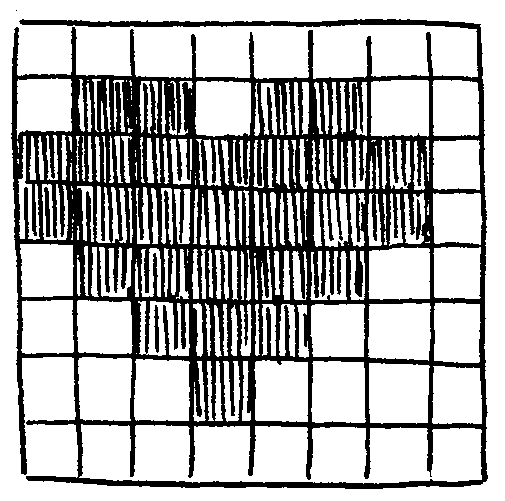
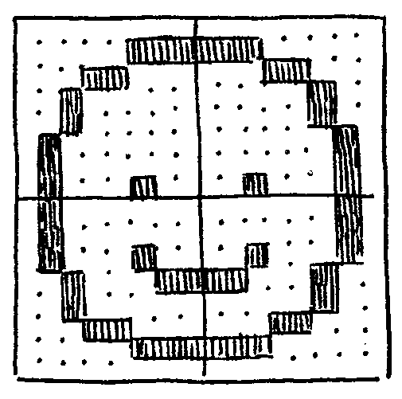

We'll begin with drawing a pixel, from which lines, letters, shapes and other primitives can be derived.
(WORK IN PROGRESS--)
@draw-pixel ( -- ) #0010 .Screen/x DEO2 a000 1080 2837 #0020 .Screen/y DEO2 a000 2080 2a37 #01 .Screen/pixel DEO a001 2e17 JMP2r
One of the many things that Plan 9 has made quite clear to me, was that interface design can be fun. An easy access to a pixel buffer makes all the difference for fostering an ecosystem of personalized applications.
The Famicom's picture processing unit uses little 8x8 tiles, which fit neatly in 8 bytes of memory, where each byte is a row, and each monochromatic pixel is a bit. This tile size is small enough that someone with a pen and paper could mentally decipher its content, and large enough to contain a letter or a pictogram.
@draw-heart ( -- ) #0010 .Screen/x DEO2 a000 1080 2837 #0020 .Screen/y DEO2 a000 2080 2a37 ;heart-icn .Screen/addr DEO2 a001 2e80 2c37 #01 .Screen/sprite DEO a001 2e17 JMP2r @heart-icn 006c fefe 7c38 1000
The Neo Geo's graphics processor assembles tiles into larger sprites by drawing them in a sequence, either vertically or horizontally.
We can draw a 2x2 picture by sending a single extra drawing instruction for the bottom row of the picture, we can leverage this sprite drawing system to draw larger real-time graphics with very little boilerplate and change in bytecode size.
@draw-smile ( -- ) #0010 .Screen/x DEO2 a000 1080 2837 #0020 .Screen/y DEO2 a000 2080 2a37 ;smile-icns .Screen/addr DEO2 a001 3780 2c37 #16 .Screen/auto DEO a016 2617 #01 .Screen/sprite DEOk DEO a001 2f97 17 JMP2r @smile-icns ( first row ) 0007 1820 2040 4044 00e0 1804 0402 0222 ( second row ) 4040 4423 2018 0700 0202 22c4 0418 e000